Activity: Create a 3D sketch
This activity guides you through the process of drawing the 3D sketch shown.
Click here to download the activity file.
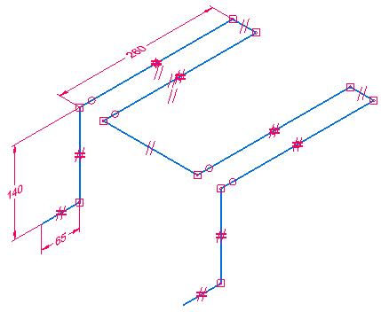
You can use the 3D sketch to create a swept protrusion feature shown below.
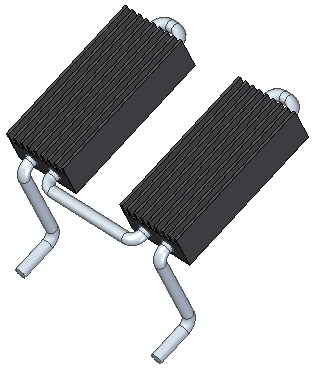
Start Solid Edge.
On the File menu, click Open.
In the Open File dialog box, set the Look in: field to the folder where the training files reside.
Click 3d_sketch.par and then choose Open.
Choose 3D Sketching tab→3D Draw group→3D Line .
Notice the 3D alignment lines attached to the cursor. These alignment lines assist you in drawing along the active coordinate system X, Y, or Z axes. Red is the X axis, green is the Y axis, and blue is the Z axis.
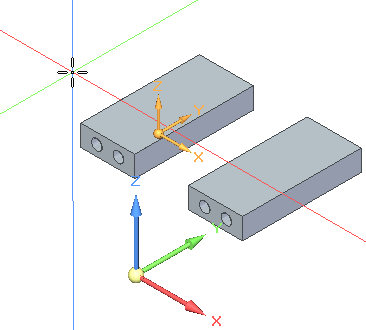
You can turn off the 3D alignment lines by choosing the 3D Sketching tab→3D Intellisketch group→Show 3D Alignment Lines command
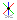
.Click in the approximate location (1) shown. Notice that as you move the cursor and align with one of the axes, a parallel icon (2) displays. Also notice that while in a 3D sketching command that the orient triad (3) appears. The triad axis that the line element is parallel to highlights.
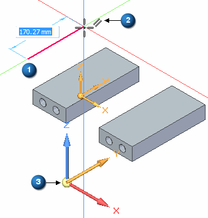
When the line is aligned with the Y axis and is near 260 mm, click to define the second point.
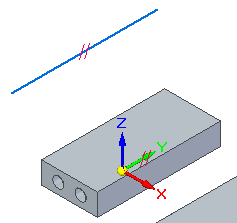
Notice the parallel relationship icon on the line. When you hover over the icon on the line, notice that the parallel icon on the Base coordinate Y axis highlights. The line is constrained to a Y direction.
-
Place a 260 mm dimension on the line.
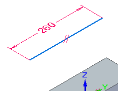
You will now make the line coaxial with a circular element on the part. The coaxial relationship constrains the line to follow the axis of a cylindrical face or normal and concentric to a circular element.
Choose 3D Sketching tab→3D Relate group→Coaxial .
Select the line and then select the circular edge shown.
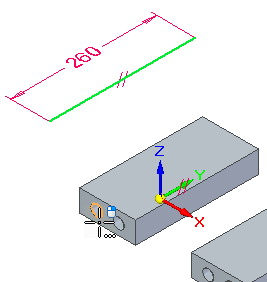
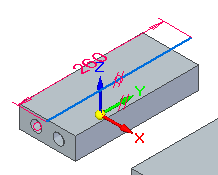
You could have drawn the original line at any orientation and then used the coaxial relationship to define the direction and location.
Position the line to have equal lengths extended from both ends of the cylinder. Place a dimension to accomplish this.
-
Place a 20 mm dimension between the endpoint of the line (1) and the center of the circular edge (2).
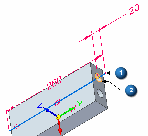
You will now draw six lines using keypoints to define lengths and the triad to define the directions.
Choose 3D Sketching tab→3D Draw group→3D Line .
Select the endpoint shown.
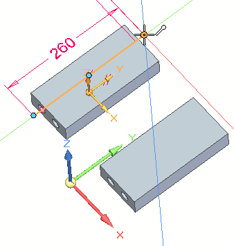
Click the X axis (1) of the triad to lock to the X direction.
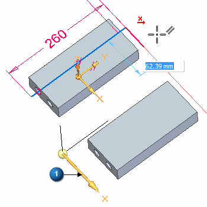
To define the length, choose a center point of the cylinder. You can choose a center point on either end of the cylinder.
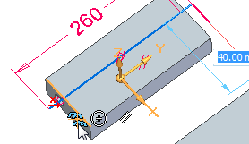
On the triad, lock to the Y axis and then select the keypoint shown to define the length.
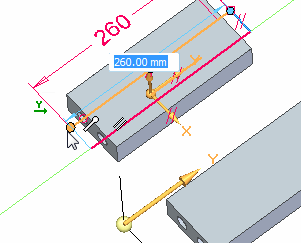
On the triad, lock to the X axis and then select the keypoint shown to define the length.
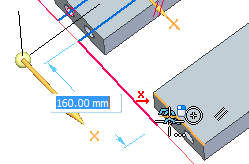
On the triad, lock to the Y axis and then select the keypoint shown to define the length.
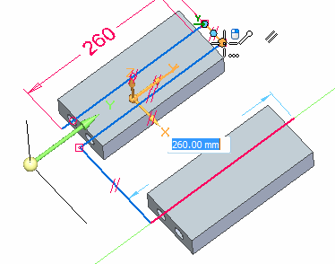
On the triad, lock to the X axis and then select the keypoint shown to define the length.
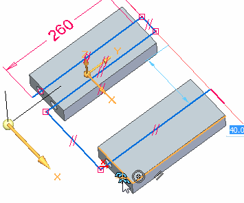
On the triad, lock to the Y axis and then select the keypoint shown to define the length.
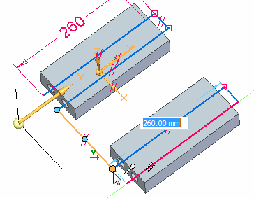
Your result should be the same as shown.
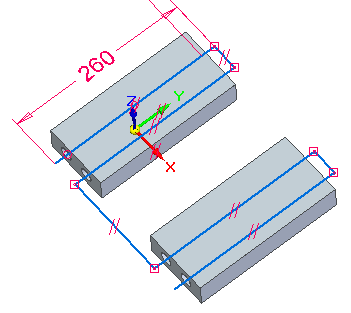
Draw the four lines shown in green. Apply Equal relationships and add dimensions.
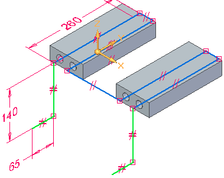
Draw the four lines and do not worry about the lengths. Two of the lines are in the Z direction and two are in the Y direction.
Choose 3D Sketching tab→3D Relate group→Equal . Make lines (1) equal and make lines (2) equal.
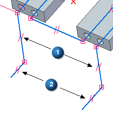
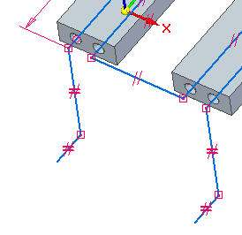
Place the dimensions shown.
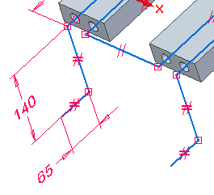
Place fillets on all connected lines.
Choose 3D Sketching tab→3D Draw group→3D Fillet .
Place 15 mm fillets on all connected lines.
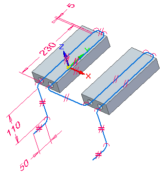
This completes the creation of a 3D sketch.
Hover over the 3D Sketch node in PathFinder, and notice that the 3D sketch highlights.
As an example, you can use the 3D sketch to create a swept protrusion feature shown below.
Save the file and exit.